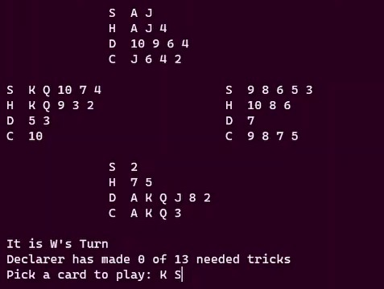
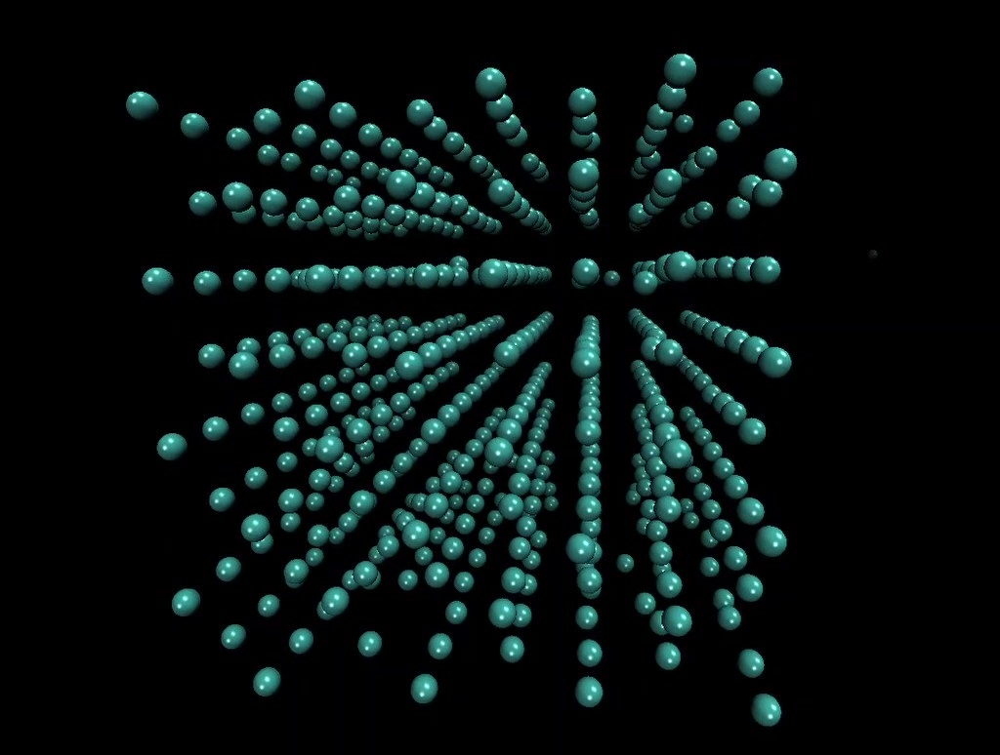
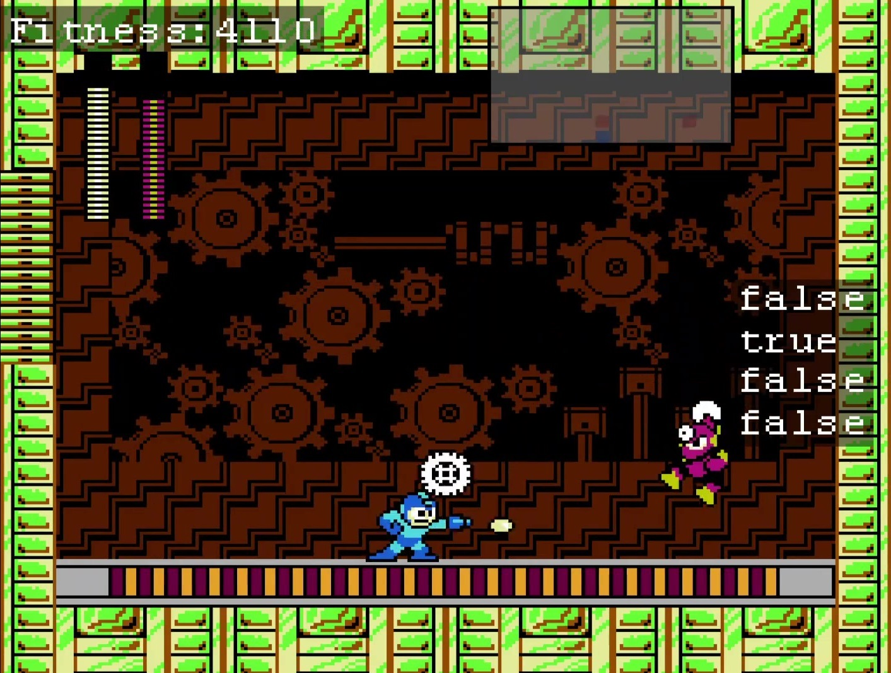

Projects

C++
Bridge Playing Program
Using the Monte Carlo Tree Search algorithm, an A.I. player was built for the game
of bridge. Competitive performance was shown on simpler hands however more
game specific tactics must be added to play difficult hands

Python
MgO Crystal Model
Applying solid state physics to model an MgO crystal in Python by creating methods
for periodic boundary conditions, lattice energy calculation and minimisation of
lattice energy through conjugate gradient- and steepest descent algorithms.

Lua
NEAT
Used the NEAT algorithm to create a bot that could learn and then play sections of
the NES video game Mega Man II by itself.
Contact